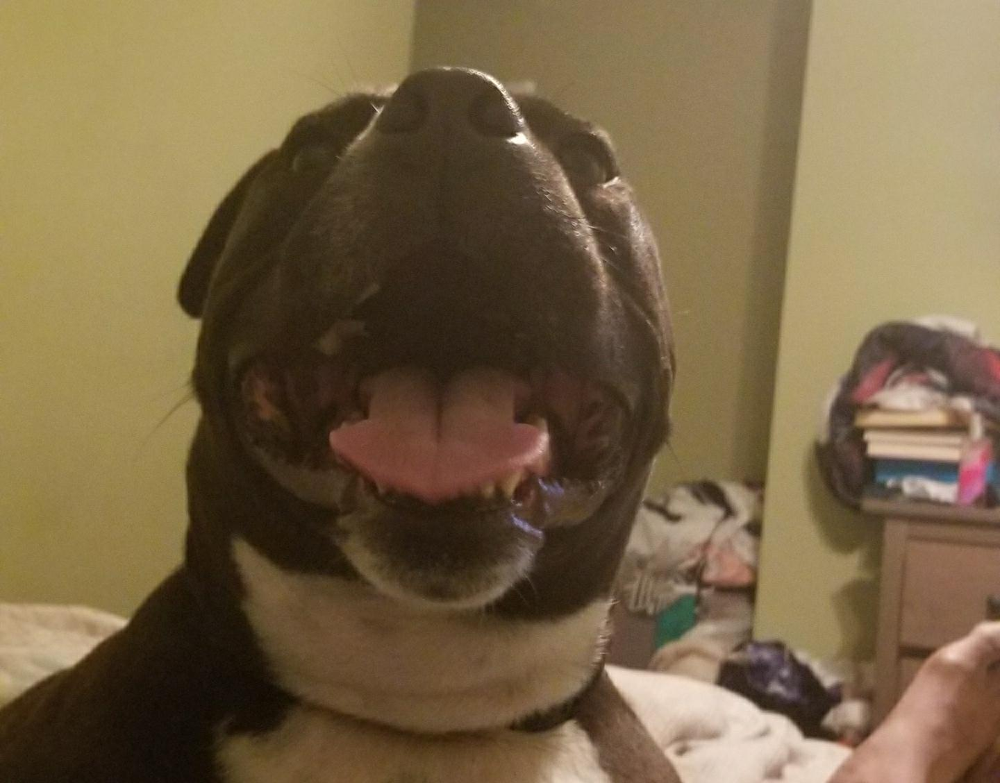
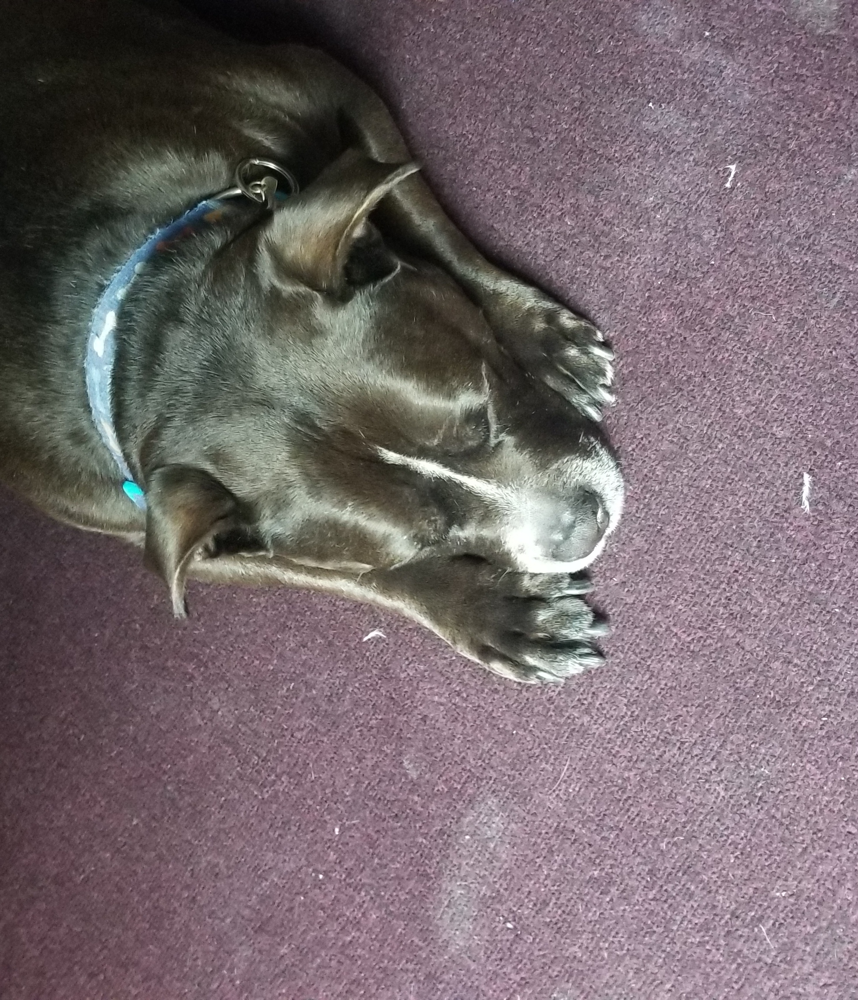
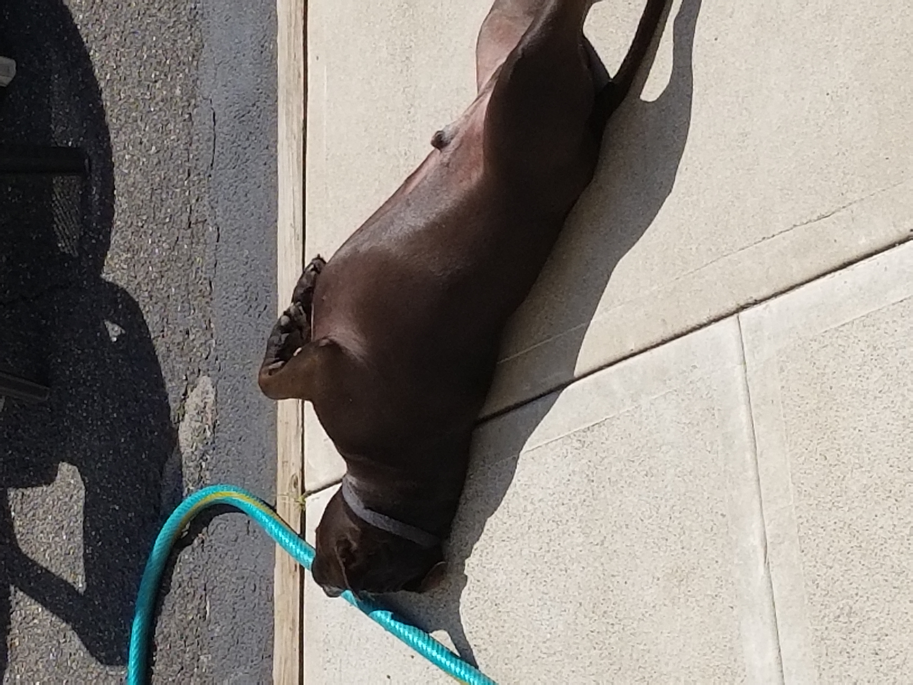

Lazy Blazey

Although Blazey is ferocious, usually antagonizing other animals he is a
great human sidekick and is a hit with the children

- "One of the coolest pups around"- Troy
- "Always finishes his food" - Everyone
- "Always scared of me when all I want to do is play" - Opposums
- "I feed him alot; never disappoints" - Gus
- "Always peaceful during sleep" - Steph
- "Great with kids!" - Bri
- "Usually keeps quiet" - Neighbors

The Life
-
Born: June 2014 with his sibling pups into a Mexican family
from New Jersey, US
-
Drama: Within a year of life, issues of aggression towards
other dogs, including his own sister, prompted for him to be raised
independent of other animals in the household
-
Result: Although he grows up without much interaction with
other dogs, he becomes a child favorite as he is inexplicable smitten
with kids and young adults while maintaining his protective aggression
with other puppies
-
Currently: Enjoys a semi-sendentary retired life that is
predicated on leisurely walks (away from dogs), playing in the yard
during nice sunny days, and plenty of sleep throughout the day
The Style
-
Fur: With a thick coat of shiny fur about 0.5-1.0 inches long,
he is always looking sleek and well kept. Monthly trips to the groomer
always makes sure his nails are maintained and cleanliness up to date
-
Health: Though he went through a recent seizure scare, his
style is unchanged. His overall health is great, though perhaps a
little husky. He enjoy frequent treats for being so well-behaved
-
Play Style: Though he is heavy at over 80 pounds, he is very
active with horsing around. You can catch him joining in on workout
sessions with adults or battling it out against his toy rope
-
Hunting: Despite his size, he enjoys hunting critters much
faster than him. However, he is inexplicably also known to get scared
of some harmless creatures, such as your occasional opposum
If you are interested in learning more about this glorious pup, visit
his
Wikipedia Page